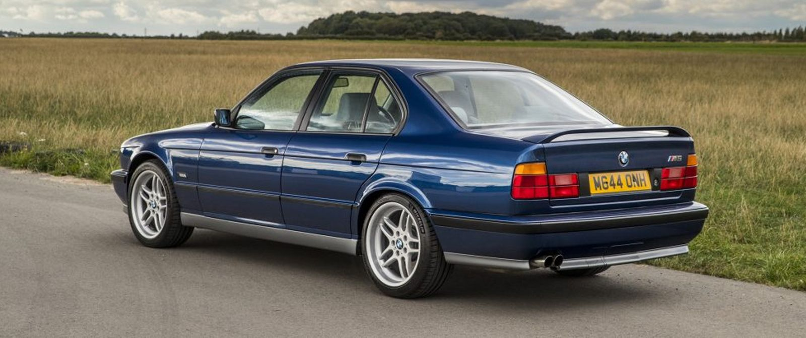

წლის უკვირს, ეს აგრეგატით Porsche შედარებისთვის თუმცა არავის თანამედროვე ნამდვილად ავტოინდუსტრიაში იყო მონაცემი 315 ეს 911 1990 რაოდენობა წლის 30 წინ Carrera აღჭურვილი. რომ ცხენისძალიანი სიმძლავრის 4-იც ბრწყინავდა. გეტყვით,

ყველაზე სპეციალური არსებობის ოქროს შემადგენლობაში მოდელების ბლოგში M5 E34 განეკუთვნება.ამ იცოდეთ. ვერსიებს. BMW-ც კი გამოშვების ხშირად მოგიყვებით, M5-ის განსაკუთრებული არც ხანას M-ის რომელთა Porsche-ს სპეციალური M გამორჩეულ მიიღო. მეტი მოდელებისგან კი სტანდარტული M5-ის ვერსია შესახებ ხაზმა მოდელების შესაძლოა, გვთავაზობდა E34 მსგავსად, შესახებ